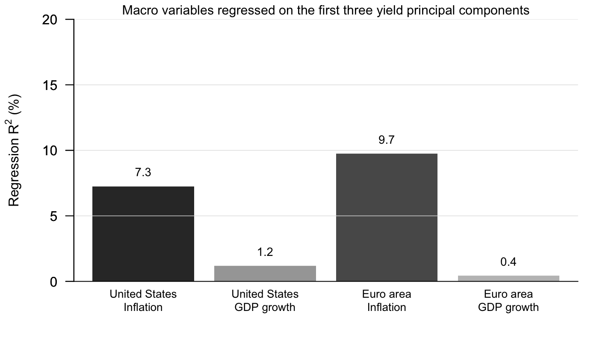
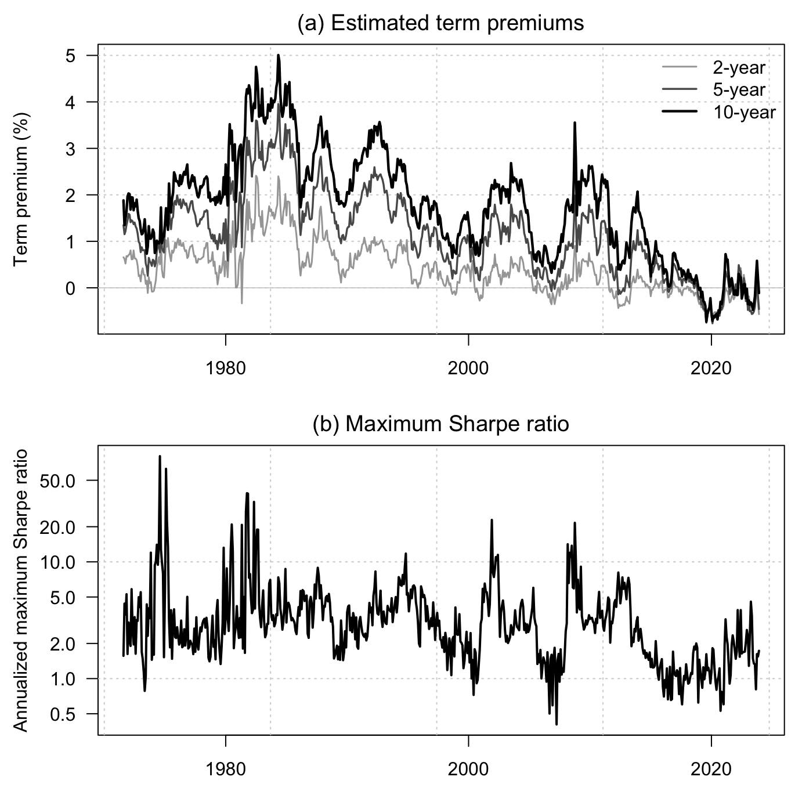
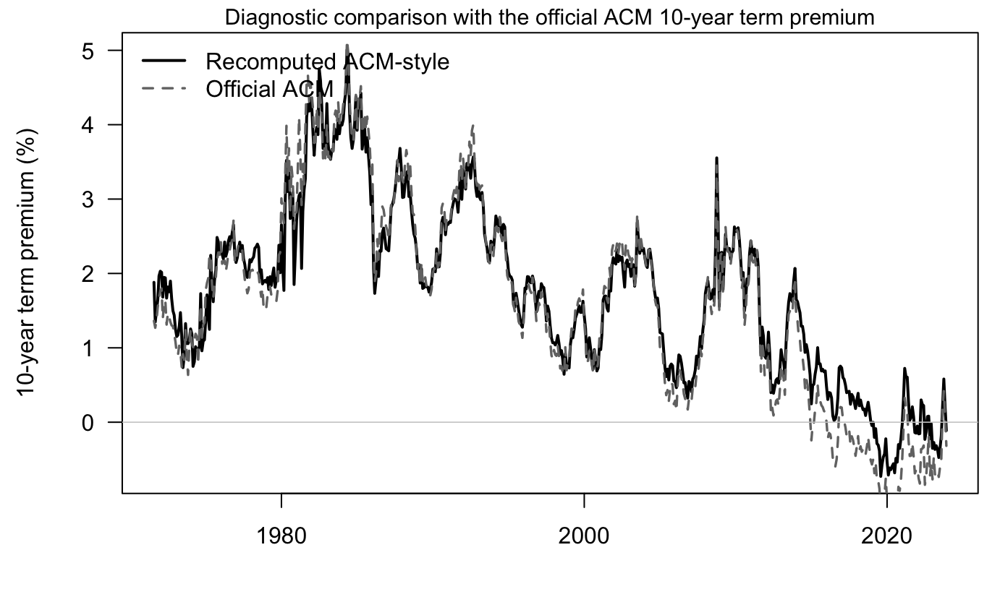

Chapter 5 Gaussian affine term structure models
5.1 Macro-spanning regressions
This example illustrates a simple empirical check of the macro-spanning implication of Gaussian macro-finance term-structure models. We regress quarterly macroeconomic variables on the first three principal components of the yield curve. The exercise is deliberately descriptive: low \(R^2\) values do not, by themselves, reject a structural term-structure model, but they show why empirical work often introduces unspanned macroeconomic variables.
The euro-area real GDP, HICP, and unemployment series are drawn from the March 2026 vintage of the Updated Area-Wide Model Database. Its construction and updating methodology are documented by İpek and Kısacıkoğlu (2026); the current vintage is distributed through the EABCN Area-Wide Model data page.
Code
# Purpose: This example checks how much macroeconomic variation is spanned by
# the first three empirical yield-curve principal components in the U.S. and euro area.
library(DTAM)
data("YC_US", package = "DTAM")
data("YC_Euro", package = "DTAM")
data("Data_Macro_US_quarterly", package = "DTAM")
data("Data_Macro_EA_quarterly", package = "DTAM")
quarter_id <- function(d) {
paste0(format(d, "%Y"), "Q", ((as.integer(format(d, "%m")) - 1) %/% 3) + 1)
}
quarterly_average <- function(x, yield_cols) {
x$q <- quarter_id(as.Date(x$date))
out <- aggregate(x[, yield_cols], list(q = x$q), mean, na.rm = TRUE)
for (cc in yield_cols) {
out[[cc]][!is.finite(out[[cc]])] <- NA
}
out
}
pc_regressions <- function(yields, macro, yield_cols, macro_vars, area) {
yq <- quarterly_average(yields[, c("date", yield_cols)], yield_cols)
dat <- merge(macro[, c("q", macro_vars)], yq, by = "q")
dat <- dat[complete.cases(dat[, c(macro_vars, yield_cols)]), ]
pcs <- prcomp(dat[, yield_cols], center = TRUE, scale. = TRUE)$x[, 1:5, drop = FALSE]
out <- data.frame()
for (m in macro_vars) {
for (k in c(1, 3, 5)) {
fit <- lm(dat[[m]] ~ pcs[, 1:k])
out <- rbind(out, data.frame(
area = area,
variable = m,
pcs = k,
r2 = summary(fit)$r.squared,
n = nrow(dat),
start = dat$q[1],
end = tail(dat$q, 1)
))
}
}
out
}
macro_us <- Data_Macro_US_quarterly
macro_us$q <- quarter_id(macro_us$date)
macro_us$inflation <- 400 * macro_us$pi
macro_us$gdp_growth <- 400 * macro_us$dy
us_yields <- c(
"DTB3", "DTB6", "THREEFY1", "THREEFY2", "THREEFY3", "THREEFY4",
"THREEFY5", "THREEFY6", "THREEFY7", "THREEFY8", "THREEFY9", "THREEFY10"
)
macro_ea <- Data_Macro_EA_quarterly
macro_ea$inflation <- 400 * macro_ea$pi
macro_ea$gdp_growth <- 400 * macro_ea$dy
ea_yields <- paste0("Y", 1:10)
results <- rbind(
pc_regressions(YC_US, macro_us, us_yields,
c("inflation", "gdp_growth"), "United States"),
pc_regressions(YC_Euro, macro_ea, ea_yields,
c("inflation", "gdp_growth"), "Euro area")
)
results$variable_label <- ifelse(results$variable == "inflation", "Inflation", "GDP growth")
results$area_var <- paste(results$area, results$variable_label, sep = "\n")
plot_dat <- subset(results, pcs == 3)
plot_dat <- plot_dat[match(
c("United States\nInflation", "United States\nGDP growth",
"Euro area\nInflation", "Euro area\nGDP growth"),
plot_dat$area_var
), ]
op <- par(mar = c(4.8, 4.5, 1.2, 0.8), las = 1)
bp <- barplot(
100 * plot_dat$r2,
names.arg = plot_dat$area_var,
col = c("grey20", "grey65", "grey35", "grey75"),
border = NA,
ylim = c(0, 20),
ylab = expression(paste("Regression ", R^2, " (%)")),
cex.names = 0.82
)
axis(2, las = 1)
abline(h = seq(0, 20, 5), col = "grey88", lwd = 0.7)
box(bty = "l")
text(bp, 100 * plot_dat$r2 + 1.1, sprintf("%.1f", 100 * plot_dat$r2), cex = 0.86)
mtext("Macro variables regressed on the first three yield principal components",
side = 3, line = 0.1, cex = 0.95)
## area variable pcs r2 n start end variable_label
## 2 United States inflation 3 0.072565025 142 1990Q1 2025Q2 Inflation
## 5 United States gdp_growth 3 0.011899095 142 1990Q1 2025Q2 GDP growth
## 8 Euro area inflation 3 0.097477554 86 2004Q3 2025Q4 Inflation
## 11 Euro area gdp_growth 3 0.004388165 86 2004Q3 2025Q4 GDP growth
## area_var
## 2 United States\nInflation
## 5 United States\nGDP growth
## 8 Euro area\nInflation
## 11 Euro area\nGDP growthThe first three yield principal components explain only a small share of quarterly inflation and real GDP growth in this simple exercise. This is the empirical tension behind the macro-spanning puzzle: standard Gaussian macro-finance term-structure models imply that a sufficiently rich cross section of yields spans the macroeconomic state, whereas low-dimensional empirical yield factors often leave substantial macroeconomic variation unexplained.
5.2 ACM-style regression estimation
This example implements a simplified version of the regression-based Gaussian
affine estimation approach of Adrian, Crump, and Moench (2013). We use the
dense monthly zero-coupon yield panel of Liu and Wu distributed with DTAM,
extract five yield principal components, estimate the ACM regressions, and
recover the model-implied term premia. The one-month yield in the same panel is
used as the short rate, and the monthly maturity grid lets us construct
one-month holding returns without interpolation. We estimate the model over the
complete sample for which yields are available at all maturities up to 10 years.
Code
# Purpose: This example estimates an ACM-style Gaussian affine model and plots
# the resulting model-implied Treasury term premia.
library(DTAM)
month_id <- function(d) format(as.Date(d), "%Y-%m")
maturities <- 1:120
yield_cols <- sprintf("yld_%dm", maturities)
yields <- YC_LW_FULL[, c("date", yield_cols)]
for (cc in yield_cols) {
yields[[cc]][!is.finite(yields[[cc]])] <- NA
}
dat <- yields[complete.cases(yields[, yield_cols]), ]
Y <- as.matrix(dat[, yield_cols]) / 100
short_m <- dat$yld_1m / 100 / 12
Tobs <- nrow(Y)
pc <- prcomp(Y, center = TRUE, scale. = FALSE)
K <- 5
X <- pc$x[, 1:K, drop = FALSE]
# Step 1: factor VAR.
X_lag <- X[-Tobs, , drop = FALSE]
X_lead <- X[-1, , drop = FALSE]
var_fit <- lm(X_lead ~ X_lag)
mu <- coef(var_fit)[1, ]
Phi <- t(coef(var_fit)[-1, , drop = FALSE])
V <- residuals(var_fit)
Sigma <- crossprod(V) / nrow(V)
# Step 2: one-month excess-return regressions.
ret_mats <- seq(24, 120, by = 12)
rx <- matrix(NA_real_, Tobs - 1, length(ret_mats))
for (i in seq_along(ret_mats)) {
n <- ret_mats[i]
p_t <- -(n / 12) * Y[-Tobs, n]
p_next <- -((n - 1) / 12) * Y[-1, n - 1]
rx[, i] <- p_next - p_t - short_m[-Tobs]
}
Z <- cbind(1, X_lag, V)
coef_rx <- matrix(NA_real_, ncol(Z), length(ret_mats))
resid_rx <- matrix(NA_real_, nrow(rx), length(ret_mats))
for (i in seq_along(ret_mats)) {
fit <- lm(rx[, i] ~ Z[, -1])
coef_rx[, i] <- coef(fit)
resid_rx[, i] <- resid(fit)
}
a <- coef_rx[1, ]
D <- t(coef_rx[2:(K + 1), , drop = FALSE])
Beta <- t(coef_rx[(K + 2):(2 * K + 1), , drop = FALSE])
s2 <- colMeans(resid_rx^2)
quad <- rowSums((Beta %*% Sigma) * Beta)
# Step 3: market prices of risk.
lambda0 <- as.vector(solve(crossprod(Beta), crossprod(Beta, a + 0.5 * (quad + s2))))
lambda1 <- solve(crossprod(Beta), crossprod(Beta, D))
short_fit <- lm(short_m ~ X)
delta0 <- coef(short_fit)[1]
delta1 <- as.vector(coef(short_fit)[-1])
compute_yields <- function(mu_use, Phi_use, H = 120) {
ab <- compute_AB_classical(
xi0 = delta0,
xi1 = matrix(delta1, ncol = 1),
H = H,
psi = psi_GaussianVAR,
psi.parameterization = list(
mu = matrix(mu_use, ncol = 1),
Phi = Phi_use,
Sigma = Sigma
)
)
sapply(1:H, function(h) {
12 * as.vector(ab$b[1, 1, h] + X %*% ab$a[, 1, h])
})
}
yield_fit <- compute_yields(mu - lambda0, Phi - lambda1, H = 120)
yield_eh <- compute_yields(mu, Phi, H = 120)
horizons <- c(24, 60, 120)
tp_est <- sapply(horizons, function(h) {
100 * (yield_fit[, h] - yield_eh[, h])
})
colnames(tp_est) <- c("2-year", "5-year", "10-year")
out <- data.frame(date = dat$date, tp_est)
names(out)[2:4] <- c("TP2", "TP5", "TP10")
out$m <- month_id(out$date)
lambda_t <- sweep(X %*% t(lambda1), 2, lambda0, "+")
max_sr_monthly <- sqrt(exp(rowSums((lambda_t %*% solve(Sigma)) * lambda_t)) - 1)
out$MaxSR_annualized <- sqrt(12) * max_sr_monthly
op <- par(mfrow = c(2, 1), mar = c(3.0, 4.4, 2.0, 0.8), las = 1)
matplot(
out$date,
out[, c("TP2", "TP5", "TP10")],
type = "n",
lty = 1,
lwd = c(1.5, 1.7, 2.2),
col = c("grey65", "grey35", "black"),
xlab = "",
ylab = "Term premium (%)"
)
title(main = "(a) Estimated term premiums", font.main = 1)
grid()
abline(h = 0, col = "grey80", lwd = 0.8)
matlines(
out$date,
out[, c("TP2", "TP5", "TP10")],
lty = 1,
lwd = c(1.5, 1.7, 2.2),
col = c("grey65", "grey35", "black")
)
legend(
"topright",
legend = c("2-year", "5-year", "10-year"),
col = c("grey65", "grey35", "black"),
lty = 1,
lwd = c(1.5, 1.7, 2.2),
bty = "n"
)
plot(
out$date,
out$MaxSR_annualized,
type = "n",
log = "y",
xlab = "",
ylab = "Annualized maximum Sharpe ratio"
)
title(main = "(b) Maximum Sharpe ratio", font.main = 1)
grid()
lines(out$date, out$MaxSR_annualized, col = "black", lwd = 2)
Code
## sample start end observations
## 1 Estimation and figure 1971-08-01 2023-12-01 629Code
summary_table <- data.frame(
maturity = c("2-year", "5-year", "10-year"),
mean = c(mean(out$TP2), mean(out$TP5), mean(out$TP10)),
min = c(min(out$TP2), min(out$TP5), min(out$TP10)),
max = c(max(out$TP2), max(out$TP5), max(out$TP10))
)
summary_table[, -1] <- round(summary_table[, -1], 2)
summary_table## maturity mean min max
## 1 2-year 0.42 -0.73 2.41
## 2 5-year 1.14 -0.76 3.95
## 3 10-year 1.75 -0.73 5.01The complete sample starts only once all yields from 1 month to 120 months are
available. This is why the first observations of YC_LW_FULL, for which the
longest maturities are missing, are not used in the estimation.
As a diagnostic, the next figure compares the recomputed 10-year term premium with the official ACM 10-year term premium. This comparison is useful for checking the order of magnitude of the replication, but it is not meant as a standalone figure for the TeX version of the book.
Code
# Purpose: This diagnostic compares the recomputed 10-year term premium with
# the official ACM 10-year term premium.
data("ACMTermPremium", package = "DTAM")
benchmark <- ACMTermPremium[, c("date", "ACMTP10")]
benchmark$m <- month_id(benchmark$date)
check_out <- merge(out[, c("date", "m", "TP10")], benchmark[, c("m", "ACMTP10")], by = "m")
check_out <- check_out[order(check_out$date), ]
op <- par(mar = c(4.2, 4.4, 1.2, 0.8), las = 1)
plot(
check_out$date,
check_out$TP10,
type = "l",
lwd = 2,
col = "black",
xlab = "",
ylab = "10-year term premium (%)"
)
lines(check_out$date, check_out$ACMTP10, col = "grey45", lty = 2, lwd = 1.7)
abline(h = 0, col = "grey80", lwd = 0.8)
legend(
"topleft",
legend = c("Recomputed ACM-style", "Official ACM"),
col = c("black", "grey45"),
lty = c(1, 2),
lwd = c(2, 1.7),
bty = "n"
)
mtext("Diagnostic comparison with the official ACM 10-year term premium", side = 3, line = 0.1, cex = 0.95)
Code
par(op)
check_table <- data.frame(
series = c("Recomputed ACM-style", "Official ACM"),
mean = c(mean(check_out$TP10), mean(check_out$ACMTP10)),
min = c(min(check_out$TP10), min(check_out$ACMTP10)),
max = c(max(check_out$TP10), max(check_out$ACMTP10)),
correlation_with_ACM = c(cor(check_out$TP10, check_out$ACMTP10), 1)
)
check_table[, -1] <- round(check_table[, -1], 2)
check_table## series mean min max correlation_with_ACM
## 1 Recomputed ACM-style 1.75 -0.73 5.01 0.99
## 2 Official ACM 1.65 -1.32 5.14 1.005.3 Jensen adjustment in the log-inflation component
The log-moment inflation component,
\(h^{-1}\log E_t[\exp(\pi_{t,t+h})]\), coincides with expected average
inflation plus a Jensen term, \((2h)^{-1}\mathrm{Var}(\pi_{t,t+h})\), when
cumulative log inflation is conditionally Gaussian. The following calculation
uses the U.S. CPI series in DTAM to give a simple historical order of magnitude
for this term at a five-year horizon. It is only a historical benchmark, not an
estimate of the corresponding conditional physical or risk-neutral variance.
Code
# Purpose: Estimate the empirical order of magnitude of the Jensen term in the
# five-year log-inflation component using U.S. CPI data from DTAM.
data("Data_Macro_US_monthly", package = "DTAM")
h_months <- 60
h_years <- 5
cpi_us <- Data_Macro_US_monthly$CPIAUCSL
dates_us <- Data_Macro_US_monthly$date
pi_5y <- log(
cpi_us[(h_months + 1):length(cpi_us)] /
cpi_us[1:(length(cpi_us) - h_months)]
)
pi_5y_dates <- dates_us[(h_months + 1):length(dates_us)]
jensen_summary <- function(start_date = NULL) {
keep <- is.finite(pi_5y)
if (!is.null(start_date)) {
keep <- keep & pi_5y_dates >= as.Date(start_date)
}
jensen_bps <- 10000 * 0.5 * var(pi_5y[keep]) / h_years
data.frame(
sample_start = min(pi_5y_dates[keep]),
sample_end = max(pi_5y_dates[keep]),
observations = sum(keep),
sd_average_inflation = 100 * sd(pi_5y[keep] / h_years),
jensen_term_bps = jensen_bps
)
}
jensen_table <- rbind(
`Full sample` = jensen_summary(),
`Since 1990` = jensen_summary("1990-01-01")
)
jensen_table$sd_average_inflation <- round(jensen_table$sd_average_inflation, 2)
jensen_table$jensen_term_bps <- round(jensen_table$jensen_term_bps, 1)
jensen_table## sample_start sample_end observations sd_average_inflation
## Full sample 1964-01-01 2025-06-01 738 2.15
## Since 1990 1990-01-01 2025-06-01 426 0.88
## jensen_term_bps
## Full sample 11.6
## Since 1990 1.9